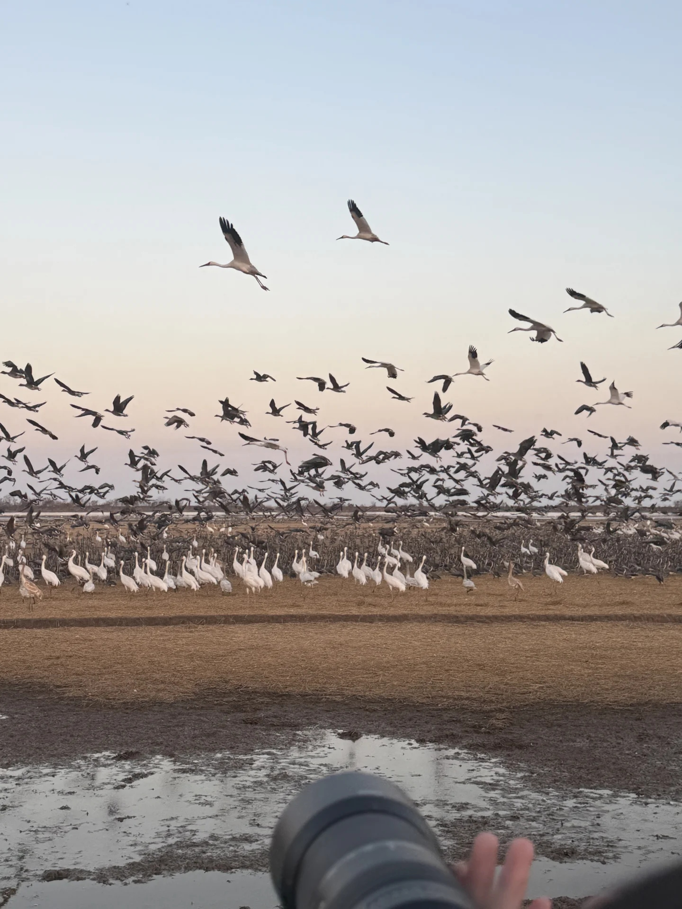

文明观鸟 · 亲近自然
鄱阳湖观鸟的最佳季节是11月至次年2月，其中12月至1月候鸟种类和数量最多。一天之中，清晨6:00-9:00和傍晚16:00-18:00是候鸟最活跃的时段，白鹤、白枕鹤常在此时觅食，是观赏的最佳时机。

吴城候鸟保护区是鄱阳湖最著名的观鸟胜地，被誉为"候鸟王国"。这里有大湖池、常湖池、朱市湖等观鸟点。南矶山湿地也是观赏白鹤和小天鹅的好去处。建议选择有专业向导带领的观鸟路线，既能保证安全，又能获得更专业的讲解。
观鸟基本装备包括：望远镜（必备）、鸟类图鉴或手机识鸟APP、笔记本和笔（记录观察到的鸟种）、相机（长焦镜头效果更佳）。冬季鄱阳湖气温较低，湖边风大，务必穿着防风保暖的衣物，戴好帽子和手套。